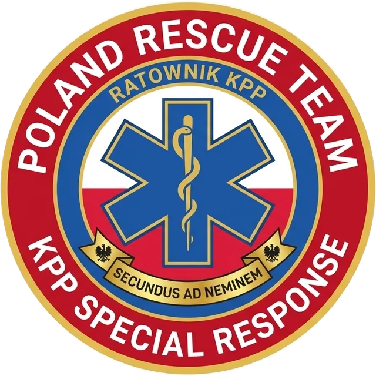
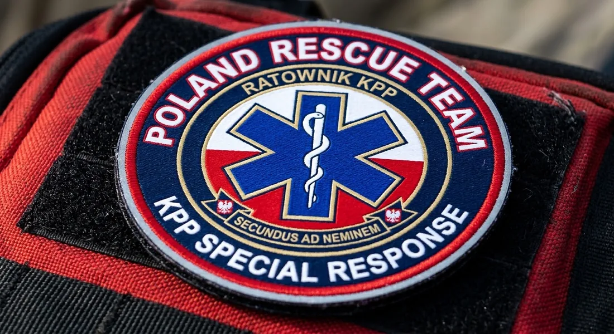

Poland Rescue Team — KPP Special Response
Na zabezpieczenia i zdarzenia wyjeżdża zespół o stałej strukturze dowodzenia. Każdy wie, kto decyduje, kto prowadzi segregację i kto zabezpiecza teren — zanim zespół wyjedzie z bazy, a nie dopiero na miejscu.
Motto zespołu: Secundus ad Neminem — „drugi po nikim”.

Hierarchia dowodzenia i funkcje operacyjne
Podział ról jest stały i opisany w regulaminie zespołu. Starszy ratownik zastępuje dowódcę, gdy ten jest nieobecny — decyzja nigdy nie zostaje bez właściciela.
Dowódca Zespołu
Team Leader- Bazyfikacja i koordynacja taktyczna na miejscu zdarzenia.
- Łączność i współdziałanie z ZRM, PSP, Policją i WOPR/GOPR.
- Podejmowanie decyzji o dyslokacji i zakończeniu działań.
Starszy Ratownik KPP
Senior Specialist- Prowadzenie segregacji medycznej (Triage START / JumpSTART).
- Nadzór nad sprzętem medycznym (AED, zestaw R1, tlenoterapia).
- Zastępowanie Dowódcy Zespołu podczas jego nieobecności.
Ratownik KPP
Specialist- Realizacja procedur Kwalifikowanej Pierwszej Pomocy.
- Resuscytacja krążeniowo-oddechowa, tamowanie masywnych krwotoków.
- Unieruchamianie złamań, opatrywanie ran i ochrona termiczna.
Ratownik / Kierowca
Support / Driver- Bezpieczny transport zespołu i obsługa pojazdu ratowniczego.
- Zabezpieczenie terenu akcji i koordynacja radiowa.
- Wsparcie techniczne oraz logistyczne na miejscu zdarzenia.
Zasady funkcjonowania i podporządkowanie taktyczne
Łańcuch meldunkowy
- Podległość służbowa: Każdy członek zespołu odpowiada bezpośrednio przed Dowódcą Zespołu.
- Meldunki SBAR: Obowiązkowe raportowanie stanu poszkodowanych przy przekazywaniu do ZRM.
- Odprawa (Briefing/Debriefing): Krótka odprawa przed wyjazdem oraz omówienie akcji po jej zakończeniu.
Standardy działania
- Uprawnienia KPP: Działania w pełnym zakresie Ustawy o Państwowym Ratownictwie Medycznym.
- Bezpieczeństwo własne: Obowiązkowy komplet ŚOI (kask, rękawice, kamizelka ostrzegawcza).
- Gotowość bojowa: Czas wyjazdu sekcji nieprzekraczający 5 minut od sygnału alarmowego.
Co to znaczy dla organizatora
Przy zabezpieczeniu imprezy dostajesz jednego dowódcę jako osobę kontaktową — on odpowiada za rozstawienie zespołu, łączność ze służbami i decyzję o zakończeniu działań. Nie musisz wiedzieć, który ratownik stoi przy którym wejściu.
Przy zdarzeniu z wieloma poszkodowanymi segregację prowadzi starszy ratownik, a Zespół Ratownictwa Medycznego dostaje od nas gotowy meldunek o każdej osobie. Po imprezie omawiamy przebieg akcji i przekazujemy dokumentację — zobacz, co dostajesz po imprezie.
